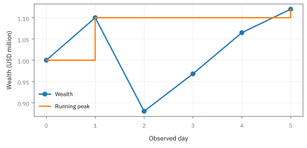
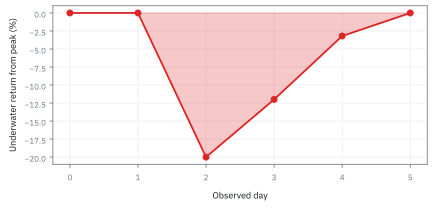
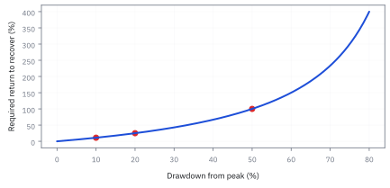
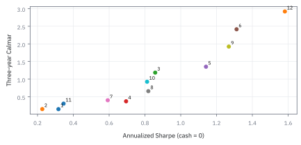
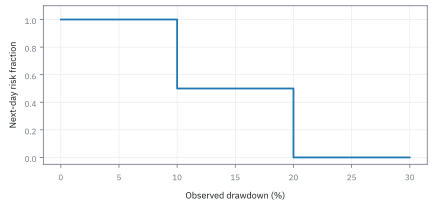

17.6 Drawdown, Calmar, and De-risking Rules
ทุนเคยขึ้นถึง 1.1 ล้าน แต่วันนี้เหลือ 880,000: เราต้องขึ้นอีก 25% จึงกลับถึงยอดเดิม ไม่ใช่ 20% บทนี้จะนับการลดลงจากยอด แล้วดูว่าการลดขนาดลงทุนช่วยอะไรและอาจทำให้พลาดช่วงฟื้นอย่างไร
บัญชีทุน \$1,000,000 เคยขึ้นไปสูงสุด \$1,100,000 แล้วลดเหลือ \$880,000 ผู้จัดการบอกนักลงทุนว่า “เราลงไป 12% จากเงินต้น ทำกำไร 12% ก็กลับมาแล้ว” ผิดตรงไหน? และถ้าบัญชีมีกฎลดขนาดลงครึ่งหนึ่งเมื่อลงจากยอดถึง 10% กฎนี้ช่วยได้เท่าไรและต้องจ่ายอะไร?
ลองตอบก่อนเปิดเฉลย
ความเจ็บวัดจากยอดสูงสุด \$1.1 ล้าน ไม่ใช่จากเงินต้น drawdown คือ 20% และต้องทำกำไร $0.20/0.80=25\%$ จึงกลับยอดเดิม (กำไร 12% กลับได้แค่ \$985,600) ในเส้นทาง 12 วันของขั้นที่ 6 กฎลดขนาดทำให้หลุมตื้นขึ้นจาก 21.13% เหลือ 16.03% แต่จบที่ \$1,011,463 แทน \$1,035,914 เพราะช่วงฟื้นถือแค่ครึ่งเดียว
สิ่งที่เราจะสร้าง
17.1 วัดขาดทุนของวันเดียว ส่วนเกมชนะ 55% จำนวน 400 รอบใน 17.2 มีโอกาสประมาณ 43.6% ที่ทุนจะลงถึงครึ่งหนึ่งเมื่อเดิมพันเต็ม Kelly ตัวเลขนี้เป็นของเกมนั้น ไม่ใช่ทุกกลยุทธ์ หน้านี้จะวัดว่าทุนต่ำกว่ายอดสูงสุดแค่ไหน นานแค่ไหน และต้องฟื้นกี่เปอร์เซ็นต์ เพื่อใช้ประกอบการกำหนดความเสี่ยงที่ยอมรับได้
เริ่มจากนับหกวันด้วยมือ หาสูตรการฟื้น เขียน Calmar ratio ที่เอาผลตอบแทนทบต้นหารด้วยหลุมที่ลึกที่สุด คิดตัวอย่างสามปี แล้วเขียนกฎลดขนาดเมื่อทุนตกให้ใช้ได้จริง ลองกับเส้นทาง 12 วัน และจบที่สิ่งที่กฎทำไม่ได้
ศัพท์ที่ใช้ในหัวข้อนี้
- Drawdown
- สัดส่วนที่ทุนตอนนี้ต่ำกว่ายอดสูงสุดที่เคยทำได้ ใช้วัดความเสียหายที่เจ้าของบัญชีรู้สึกจริงระหว่างทาง
- Maximum drawdown
- drawdown ที่ลึกที่สุดในช่วงที่วัด ใช้สรุปหลุมที่ลึกที่สุดที่เคยผ่าน
- Time under water
- ระยะเวลาที่ทุนยังไม่กลับถึงยอดเดิม ในตัวอย่างนี้นับจำนวนยอดปิดติดต่อกันที่ต่ำกว่ายอด ต้องแยกจากเวลาที่ผ่านไปตั้งแต่วันที่ทำยอดจนถึงวันที่ฟื้น
- CAGR
- Compound Annual Growth Rate อัตราโตคงที่ต่อปีที่ทำให้ทุนต้นทางกลายเป็นทุนปลายทาง ใช้เทียบผลตอบแทนทบต้นต่างช่วงเวลา
- Calmar ratio
- CAGR หารด้วย maximum drawdown ในหน้าต่างเดียวกัน ใช้ถามว่าได้เท่าไรต่อความเจ็บที่ลึกที่สุดหนึ่งหน่วย
- De-risking rule
- กฎที่ลดขนาดความเสี่ยงอัตโนมัติเมื่อ drawdown ถึงจุดตัด ใช้จำกัดความเสียหายต่อ แต่ต้องมีกฎกลับเข้าและต้นทุนการปรับ
สัญลักษณ์และหน่วย
| สัญลักษณ์ | ความหมาย | หน่วย |
|---|---|---|
| $W_t$ | ทุน ณ สิ้นวันที่ $t$ | \$ |
| $H_t$ | ยอดสูงสุดที่ทุนเคยทำได้ถึงวันที่ $t$ (ไม่มีวันลดลง) | \$ |
| $D_t$ | drawdown $1-W_t/H_t$ | สัดส่วน |
| $D_{\max}$ | drawdown ที่ลึกที่สุดในช่วง | สัดส่วน |
| $R$ | ผลตอบแทนที่ต้องทำเพื่อกลับยอด | สัดส่วน |
| $g$ | CAGR | ต่อปี |
| $T$ | ความยาวของช่วงข้อมูล | ปี |
| $a_t$ | ขนาดความเสี่ยงของวันที่ $t$ (1 คือเต็ม) | สัดส่วน |
| $r_t$ | ผลตอบแทนของกลยุทธ์ที่ขนาดเต็มในวันที่ $t$ | สัดส่วน |
| $c$ | ต้นทุนต่อการเปลี่ยนขนาดหนึ่งหน่วย | สัดส่วนของทุน |
ขั้นที่ 1 — ลองด้วยมือ: หกวันของทุน ยอดสูงสุด และ drawdown
ทุนหกวัน (ล้านดอลลาร์) คือ 1.000, 1.100, 0.880, 0.968, 1.0648 และ 1.120 ไม่มีเงินฝากถอน ใช้ยอดปิดวัน ความเจ็บวัดจากยอดสูงสุดที่เคยทำได้ ไม่ใช่จากเงินต้น จึงต้องเดินหายอดสูงสุดสะสมก่อน
วันที่ 2 ตกเหลือ 0.88 ยอดสะสมยังเป็น 1.1 เพราะมันไม่ลดตามทุน วันที่ 3 กำไร 10% เป็น 0.968 แต่ยังต่ำกว่ายอด 12% กำไรวันนั้นไม่ได้ลบความจำของยอด วันที่ 4 ขึ้นอีก 10% ยังต่ำกว่ายอด 3.2% วันที่ 5 ทำยอดใหม่ 1.12 drawdown กลับเป็นศูนย์
ยอดปิดต่ำกว่ายอดเดิมสามครั้งติดกัน คือวันที่ 2–4 แต่จากวันทำยอด 1 ถึงวันฟื้น 5 เวลาผ่านไปสี่วัน ต้องบอกว่าใช้นิยามใดในการรายงานระยะเวลา
กำไร 10% สองครั้งรวมเป็น $1.1^2-1=21\%$ จริง แต่ทุนเพิ่มจาก 0.88 เป็นเพียง $0.88\times1.21=1.0648$ ยังไม่ถึง 1.1 ต้องฟื้น 25% จากจุดต่ำสุดจึงกลับถึงยอดเดิมได้
ตัวอย่างนี้ไม่มีฝากถอน หากมีต้องแยกกระแสเงินเหล่านั้นจากกำไรขาดทุนก่อน ไม่เช่นนั้นการถอนเงินจะถูกนับเป็นการขาดทุน
Figure 17.6a — จุดสูงสุดไม่ลดตามทุน

แกนนอนคือวันที่ 0 ถึง 5 แกนตั้งคือทุน (ล้านดอลลาร์) เส้นมีจุดคือทุน 1.000, 1.100, 0.880, 0.968, 1.0648 และ 1.120 เส้นขั้นบันไดคือยอดสูงสุดสะสม ซึ่งค้างที่ 1.1 ตั้งแต่วันที่ 1 ถึง 4 แล้วขยับเป็น 1.12 ในวันที่ 5
Figure 17.6b — ระยะเวลาใต้น้ำมีความหมายด้วย

แกนตั้งคือ $100(W_t/H_t-1)$ เป็นเปอร์เซ็นต์ (ค่าลบของ drawdown) ยอดปิดทั้งหกให้ค่า 0, 0, −20, −12, −3.2 และ 0 มีสามยอดปิดติดต่อกันที่ยังต่ำกว่ายอดเดิม ความลึกกับระยะเวลาเป็นคนละเรื่อง กองทุนที่ลดลงลึกเท่ากันอาจใช้เวลาฟื้นต่างกันมาก
ขั้นที่ 2 — ตก 20% ต้องฟื้นเท่าไร
กลับไปวันที่เหลือ \$880,000 ทุนที่เหลือต้องโต $R$ จนกลับยอดเดิม เขียนเงื่อนไขนี้เป็นสมการแล้วแก้หา $R$
แทน $W_t=H_t(1-D_t)$ แล้วหารด้วย $H_t$ ยอดสูงสุดตัดกันหมด เหลือแค่สัดส่วน การฟื้นเริ่มจากฐานที่เล็กลงแล้ว จึงต้องใช้เปอร์เซ็นต์มากกว่าที่เสียเสมอ ตรวจ: $880{,}000\times1.25=1{,}100{,}000$
อนุกรม $D+D^2+\dots$ (ใช้ได้เมื่อ $D\lt1$) แสดงว่าส่วนเกินมาจากกำลังสองขึ้นไป ขาดทุน 10% ต้องฟื้น 11.11% แต่ขาดทุน 50% ต้องฟื้น 100% เปอร์เซ็นต์ที่ลดลงกับที่ต้องเพิ่มกลับจึงหักล้างกันตรง ๆ ไม่ได้ เพราะใช้ฐานทุนคนละจำนวน
Figure 17.6c — ร้อยละที่ต้องฟื้นไม่เดินเป็นเส้นตรง

แกนนอนคือ drawdown 0 ถึง 80% แกนตั้งคือผลตอบแทนที่ต้องทำเพื่อกลับยอด $100D/(1-D)$ จุดแดงคือ 10% (11.11%), 20% (25%) และ 50% (100%) ที่ปลายขวา 80% ต้องฟื้น 400% เส้นโค้งขึ้นเร็วขึ้นเรื่อย ๆ
ขั้นที่ 3 — CAGR และ Calmar ต้องมาจากหน้าต่างเดียวกัน
Calmar เอาผลตอบแทนหารด้วยความเจ็บ ผลตอบแทนในที่นี้คืออัตราโตทบต้นคงที่ที่พาทุนต้นทางไปถึงทุนปลายทางพอดี (นิยามในบรรทัดแรก) ถอดรากเพื่อแกะอัตราออกมา
เงื่อนไขสำคัญกว่าสูตร: $g$ กับ $D_{\max}$ ต้องมาจากช่วงเดียวกัน ถ้าเอาผลตอบแทนสิบปีหารด้วยหลุมของปีที่ดีที่สุด ตัวเลขจะสวยแบบไม่มีความหมาย ธรรมเนียมเดิมของ Calmar ใช้ 36 เดือนย้อนหลัง
ต้องบอกด้วยว่าตรวจยอดถี่แค่ไหน drawdown ที่วัดรายวันลึกกว่าหรือเท่ากับที่วัดรายเดือนเสมอ เพราะจุดรายเดือนเป็นส่วนหนึ่งของจุดรายวัน และช่วงข้อมูลยาวให้หลุมลึกกว่าหรือเท่ากับช่วงสั้นที่อยู่ข้างใน กลยุทธ์ที่มีข้อมูลยาวไม่เท่ากันจึงเทียบ Calmar กันตรง ๆ ไม่ได้
ขั้นที่ 4 — ตัวอย่างสามปี: ค่าเฉลี่ยสวย ทบต้นไม่สวย
โจทย์ให้อะไรมาบ้าง: ทุนสิ้นปี 0 ถึง 3 เป็น 1.00, 1.20, 0.90 และ 1.10 ล้านดอลลาร์ หา $D_{\max}$, CAGR, Calmar และเทียบกับค่าเฉลี่ยเลขคณิตของผลตอบแทนรายปี
คำตอบ: หลุมลึก 25% ทบต้นแค่ปีละ 3.228% Calmar 0.1291 คือได้ 0.13 ส่วนต่อความเจ็บหนึ่งส่วน ค่าเฉลี่ยเลขคณิต 5.74% สูงกว่าทบต้นมาก เพราะการตก 25% ต้องฟื้น 33.3% (ขั้นที่ 2) ช่องว่างนี้คือ volatility drag ของ 1.10 และ 17.2
ตรวจเองใน 10 วินาที: $1.03228^3=1.100$ และ $0.9/1.2=0.75$
Figure 17.6d — Calmar กับ Sharpe อาจจัดลำดับต่างกัน

กลยุทธ์สังเคราะห์ 12 ตัว แต่ละตัวสุ่มผลตอบแทนรายเดือน 36 เดือนจาก Normal ค่าเฉลี่ย 0.7% ความผันผวน 3.5% (numpy seed 176) แกนนอนคือ Sharpe ต่อปี ($\sqrt{12}$ คูณค่าเฉลี่ยหารด้วยความผันผวนรายเดือน เงินสดเป็นศูนย์) แกนตั้งคือ CAGR สามปีหารด้วย maximum drawdown
ทั้ง 12 ตัวมาจากแบบจำลองเดียวกัน แต่สุ่มคนละชุด จึงต่างกันทั้งค่าเฉลี่ย ความผันผวน และลำดับของข้อมูลตัวอย่าง รูปแสดงว่าตัววัดทั้งสองไม่เรียงตามกันพอดี ไม่ใช่การทดลองที่เปลี่ยนเฉพาะลำดับของข้อมูลชุดเดียว ความต่างนี้ไม่ใช่หลักฐานของฝีมือ
ขั้นที่ 5 — เขียนกฎลดขนาดให้ใช้ได้จริง
กฎตัวอย่าง: หลังปิดวัน ถ้า drawdown ต่ำกว่า 10% ใช้ขนาดเต็ม ตั้งแต่ 10% แต่ต่ำกว่า 20% ใช้ครึ่งขนาด ตั้งแต่ 20% พักความเสี่ยง ขนาดที่ตัดสินใช้กับวันถัดไปเท่านั้น เพราะ drawdown ของวันนี้รู้ตอนปิด ทุกครั้งที่เปลี่ยนขนาดเสียต้นทุน $c$ ต่อหนึ่งหน่วยของการเปลี่ยน
ตัวห้อย $t+1$ กับ $t$ คือหัวใจของกฎ: ใช้ข้อมูลที่มีถึงเมื่อวานตัดสินขนาดของวันนี้ ถ้าเผลอใช้ drawdown ของวันเดียวกับผลตอบแทน การทดสอบย้อนหลังจะลดขนาดก่อนวันร้ายได้อย่างวิเศษ ซึ่งทำไม่ได้จริง
ต้นทุนหักจากทุนก่อนรับผลตอบแทน บัญชี \$1 ล้านที่ลดจากเต็มเป็นครึ่งเสีย \$500 เงินสดส่วนที่ไม่ได้ลงทุนสมมติว่าไม่ได้ดอกเบี้ย
Figure 17.6e — นโยบายเปลี่ยนเป็นขั้น แต่ตลาดกระโดดข้ามได้

แกนนอนคือ drawdown ที่เห็นตอนปิดวัน 0 ถึง 30% แกนตั้งคือขนาดความเสี่ยงของวันถัดไป: 1 จนถึง 10% แล้ว 0.5 จนถึง 20% แล้ว 0 กฎดูแค่ยอดปิด ถ้าวันเดียวลงแรง drawdown จะกระโดดข้ามขั้นก่อนที่กฎจะได้ทำงาน (ขั้นที่ 7)
ขั้นที่ 6 — ลองกฎกับเส้นทาง 12 วัน
โจทย์ให้อะไรมาบ้าง: ผลตอบแทนรายวันที่ขนาดเต็ม (สมมติ) 12 วัน บัญชี \$1,000,000 ใช้กฎของขั้นที่ 5 กับ $c=0.001$ เทียบกับการถือขนาดเต็มตลอด ค่า $W$ ด้านล่างเขียนเป็นล้านดอลลาร์
คำตอบ: ปิดวันที่ 3 drawdown 10.70% กฎลดเป็นครึ่งขนาดตั้งแต่วันที่ 4 (เสีย \$455) หลุมของกฎลึกสุด 16.03% แทน 21.13% ปิดวันที่ 8 drawdown เหลือ 8.24% จึงกลับขนาดเต็มตั้งแต่วันที่ 9 (เสีย \$468 รวม \$923) แต่ช่วงวันที่ 6 ถึง 8 ที่ตลาดฟื้นแรง กฎถือแค่ครึ่ง จบที่ \$1,011,463 ขณะที่การถือเต็มจบที่ \$1,035,914
กฎซื้อหลุมที่ตื้นขึ้น 5.1 จุดด้วยเงิน \$24,451 ในเส้นทางนี้ ถ้าหลังวันที่ 5 ตลาดลงต่อแทนที่จะฟื้น กฎจะเป็นฝ่ายชนะ การตัดสินว่ากฎดีไหมจึงต้องทดสอบกับหลายเส้นทาง ไม่ใช่เส้นเดียว
ตรวจเองใน 10 วินาที: $1.02\times0.94\times0.95=0.91086$ และ $0.91086/1.02=0.893$ คือต่ำกว่ายอด 10.7%
ขั้นที่ 7 — สิ่งที่กฎทำไม่ได้
จุดตัด 10% และ 20% ฟังเหมือนเพดานขาดทุน แต่กฎดูแค่ยอดปิดแล้วลงมือวันถัดไป ลองสองกรณีที่ทำให้มันพัง
บรรทัดแรก: วันก่อนหลุมแค่ 5% กฎให้ขนาดเต็ม ตลาดเปิดกระโดดลง 25% ในวันเดียว หลุมกลายเป็น 28.75% ก่อนที่กฎจะมีโอกาสลดขนาด จุดตัด 20% จึงไม่ใช่เพดาน
บรรทัดที่สอง: เมื่อพักความเสี่ยงแล้วทุนไม่ขยับ drawdown ค้างที่ระดับเดิมตลอดไป กฎนี้จึงไม่มีวันให้กลับเข้าเอง ต้องมีกฎกลับเข้าแยก เช่นประเมินใหม่หลังพัก 20 วันทำการ และห้ามเลือกจุดตัดจากเส้นทางทดสอบเส้นเดียวแล้วเรียกผลว่าเป็นผลนอกตัวอย่าง
คำถามที่ควรถามออกมาดัง ๆ
ทำไมไม่ใช้ Sharpe ratio อย่างเดียว? เมื่อใช้ผลตอบแทนรายวันชุดเดียวกันสลับลำดับ ค่าเฉลี่ยและ standard deviation ไม่เปลี่ยน จึงได้ Sharpe เท่าเดิม แต่ drawdown อาจต่างกันมาก ตัววัดนี้จึงตอบคำถามเกี่ยวกับเส้นทางของทุนที่ Sharpe เพียงตัวเดียวไม่บอก
ขนาดเป็นสัดส่วนของทุนแบบ Kelly ไม่ลดขนาดเองอยู่แล้วหรือ? ใช่ ในขั้นที่ 5 ของ 17.2 ทุนหาย 10% เงินเสี่ยงก็หาย 10% แต่นั่นเป็นสัดส่วนคงที่ กฎของหน้านี้ลดสัดส่วนเองด้วย จึงลดเร็วกว่า และมีต้นทุนคือพลาดช่วงฟื้นแบบขั้นที่ 6
ความผิดที่ให้คำตอบผิดแบบเงียบ ๆ
วัดหลุมจากเงินต้น: บัญชีในโจทย์ลงแค่ 12% จากเงินต้น แต่ลง 20% จากยอด และต้องฟื้น 25% ไม่ใช่ 12%
ใช้ข้อมูลอนาคตตัดสินขนาด: การใช้ $D_{t+1}$ ตัดสิน $a_{t+1}$ ใช้ข้อมูลที่ตอนตัดสินใจยังไม่รู้ ผลทดสอบจึงไม่ใช่ผลของกฎที่นำไปทำได้จริง และอาจดูดีเกินไป
รีเซ็ตยอดเพื่อให้กราฟสวย: ตั้งยอดสูงสุดใหม่หลังขาดทุนทำให้ drawdown หายไปบนรายงาน แต่เงินไม่ได้กลับมา การรีเซ็ตต้องเขียนเป็นกฎก่อนทดสอบ
เทียบ Calmar ต่างหน้าต่าง: กองทุนที่มีข้อมูล 3 ปีดู Calmar ดีกว่ากองที่มี 15 ปีได้ เพียงเพราะหน้าต่างสั้นยังไม่เจอหลุมใหญ่
ใช้ทำอะไรบนโต๊ะจริง
ผู้จัดสรรเงินให้กองทุนดู maximum drawdown และเวลาใต้น้ำก่อนผลตอบแทนเฉลี่ย สัญญาจ้างผู้จัดการหลายแบบมีเงื่อนไขว่าถ้า drawdown ถึงระดับหนึ่งต้องลดขนาดหรือหยุดเทรด (stop-out) ส่วน desk ใช้กฎแบบขั้นที่ 5 เป็นเพดานความเสี่ยงของเทรดเดอร์แต่ละคน และทดสอบกฎนั้นด้วยหลายเส้นทาง เช่นจาก bootstrap แบบ block ของ 17.5
สามโจทย์ตรวจความเข้าใจ
1. กองทุนลงจากยอด 35% ต้องทำกำไรเท่าไรจึงกลับยอด?
เฉลย
$R=0.35/0.65=53.85\%$ มากกว่าที่เสียไปเกือบ 19 จุด
2. ทุนโตจาก 1.0 เป็น 1.5 ใน 5 ปี maximum drawdown 30% หา CAGR และ Calmar
เฉลย
$g=1.5^{1/5}-1=8.447\%$ Calmar $=0.08447/0.30=0.2816$
3. บัญชีมี drawdown 15% จึงถือครึ่งขนาด แล้ววันนี้กลยุทธ์ที่ขนาดเต็มลง 12% ปิดวันนี้ drawdown เท่าไร และพรุ่งนี้ถือขนาดเท่าไร?
เฉลย
ครึ่งขนาดเสีย 6% ทุนเหลือ $0.85\times0.94$ ของยอด drawdown $=1-0.799=20.1\%$ ถึง 20% แล้ว พรุ่งนี้พักความเสี่ยง ถ้าถือเต็มจะเป็น $1-0.85\times0.88=25.2\%$
คำนวณซ้ำด้วย JavaScript
โค้ดนี้คิดยอดสูงสุดสะสม drawdown และจำนวนวันใต้น้ำ ผลตอบแทนที่ต้องฟื้น CAGR และ Calmar และเดินกฎลดขนาดแบบวันถัดไปพร้อมต้นทุนบนเส้นทาง 12 วัน เทียบกับการถือเต็ม แล้วพิมพ์ตัวเลขหลักของหน้าออกมาหนึ่งบรรทัด
function num(name, x) {
if (typeof x !== 'number' || !Number.isFinite(x)) throw new TypeError(`${name} must be a finite number`);
return x;
}
// Running peak H_t, drawdown D_t = 1 - W_t/H_t, the deepest drawdown and the number of observations below the peak.
function drawdowns(W) {
if (!Array.isArray(W) || !W.length) throw new TypeError('wealth must be a non-empty array');
let H = -Infinity, maxD = 0, under = 0;
const peak = [], dd = [];
for (const [i, w] of W.entries()) {
if (!(num(`W[${i}]`, w) > 0)) throw new RangeError('wealth must stay positive');
H = Math.max(H, w); peak.push(H); dd.push(1 - w / H);
maxD = Math.max(maxD, dd[i]); if (dd[i] > 0) under++;
}
return {peak, dd, maxD, under};
}
// Return needed to get back to the peak: W(1 + R) = H with W = H(1 - D).
function recovery(D) {
if (!(num('D', D) >= 0 && D < 1)) throw new RangeError('drawdown must be in [0, 1)');
return D / (1 - D);
}
const cagr = (W0, WT, years) => (num('WT', WT) / num('W0', W0)) ** (1 / num('years', years)) - 1;
// Next-day rule: full size below 10% drawdown, half size from 10% to 20%, flat from 20%; cost c per unit change of size.
function derisk(returns, {c = 0.001, useRule = true} = {}) {
let W = 1, H = 1, prev = 1, maxD = 0, costs = 0;
const path = [];
for (const [i, r] of returns.entries()) {
const D = 1 - W / H; // known at yesterday's close
const a = !useRule ? 1 : D < 0.10 - 1e-12 ? 1 : D < 0.20 - 1e-12 ? 0.5 : 0;
const cost = c * Math.abs(a - prev) * W;
W = (W - cost) * (1 + a * num(`r[${i}]`, r));
costs += cost; prev = a; H = Math.max(H, W); maxD = Math.max(maxD, 1 - W / H);
path.push({a, W, D: 1 - W / H});
}
return {W, maxD, costs, path};
}
const six = drawdowns([1, 1.1, 0.88, 0.968, 1.0648, 1.12]);
const three = drawdowns([1.00, 1.20, 0.90, 1.10]);
const g3 = cagr(1.00, 1.10, 3);
const r12 = [0.02, -0.06, -0.05, -0.04, -0.08, 0.06, 0.07, 0.05, 0.04, 0.03, -0.02, 0.03];
const hold = derisk(r12, {useRule: false}), rule = derisk(r12);
console.log(JSON.stringify({
six, recover: [0.10, 0.20, 0.35, 0.50].map(recovery), check: 880000 * (1 + recovery(0.2)),
three: {maxD: three.maxD, g: g3, calmar: g3 / three.maxD, arithmetic: (0.20 - 0.25 + 0.2 / 0.9) / 3},
hold: {W: hold.W, maxD: hold.maxD}, rule: {W: rule.W, maxD: rule.maxD, costs: rule.costs, sizes: rule.path.map(p => p.a)},
ruleDays: [2, 4, 7].map(i => ({W: rule.path[i].W, D: rule.path[i].D})), holdDay5: hold.path[4],
gap: 1 - 0.95 * 0.75, halfThenDrop: 1 - 0.85 * (1 - 0.5 * 0.12), holdThenDrop: 1 - 0.85 * 0.88,
fiveYear: {g: cagr(1, 1.5, 5), calmar: cagr(1, 1.5, 5) / 0.30}
}));ที่มาที่ไป
Terry W. Young เสนอ Calmar ratio ในปี 1991 ชื่อมาจากจดหมายข่าวของเขา California Managed Accounts Reports ซึ่งติดตามผู้จัดการกองทุนฟิวเจอร์ส เหตุผลคือ Sharpe ratio ลงโทษวันที่กำไรแรงเท่ากับวันที่ขาดทุนแรง และไม่เห็นลำดับของความเจ็บ ขณะที่นักลงทุนตัดสินใจถอนเงินจากหลุมที่ลึกที่สุดที่ต้องทน
ข้อจำกัด: วิธีนี้สมมติอะไร และของจริงเป็นอย่างไร
| สมมติอะไร | ของจริง | ผลเวลาใช้งาน |
|---|---|---|
| หลุมที่ลึกที่สุดในอดีตคือเพดาน | หลุมที่ยังไม่เคยเกิดจะเกิด | หลุมจริงในอนาคตมักลึกกว่าที่เห็นในข้อมูล |
| ข้อมูลยาวพอ | ช่วงยาวเจอหลุมลึกกว่าหรือเท่ากับช่วงสั้น | เทียบ Calmar ต่างความยาวข้อมูลไม่ได้ |
| ปรับขนาดได้ที่ยอดปิด | ราคากระโดดข้ามจุดตัด | หลุมทะลุ 20% ได้ในวันเดียว (28.75%) |
| ลดขนาดแล้วปลอดภัยขึ้น | อาจลดพอดีตอนที่ควรถือ | พลาดช่วงฟื้น ต้องทดสอบกฎกับหลายเส้นทาง |
สิ่งที่ควรตอบได้หลังอ่าน
- drawdown วัดจากยอดสูงสุดสะสม $H_t$ ซึ่งไม่มีวันลดลง: จาก \$1.1 ล้านเหลือ \$880,000 คือ 20% ไม่ใช่ 12%
- ต้องฟื้น $D/(1-D)$: 20% ต้อง 25% 50% ต้อง 100%
- Calmar คือ CAGR หารด้วย maximum drawdown ในหน้าต่างเดียวกัน: 3.228%/25% = 0.1291 ขณะที่ค่าเฉลี่ยเลขคณิตให้ 5.74%
- กฎลดขนาดต้องใช้ข้อมูลถึงเมื่อวาน มีต้นทุน และมีกฎกลับเข้า: ในตัวอย่างหลุมตื้นขึ้นจาก 21.13% เป็น 16.03% แต่จบต่ำกว่า \$24,451
- จุดตัดไม่ใช่เพดาน: หลุม 5% กับวันที่ลง 25% ให้ 28.75% ก่อนที่กฎจะได้ทำงาน
17.7 ตรวจตัววัดที่กฎแบบนี้มักใช้เป็นสัญญาณ คือ VaR: นับวันที่ขาดทุนเกิน VaR แล้วถามว่ามากเกินไปไหม และมาติดกันเกินไปไหม